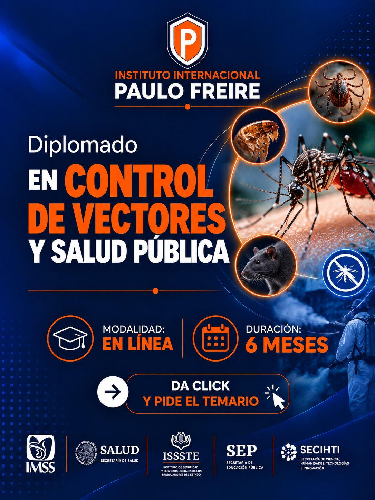
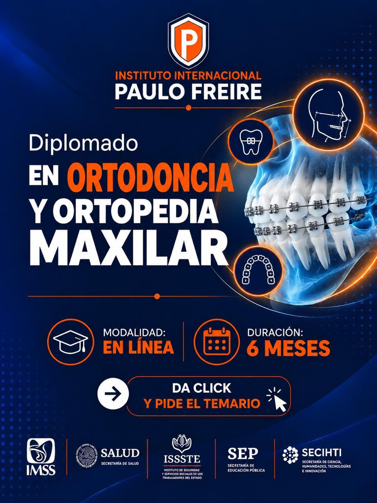
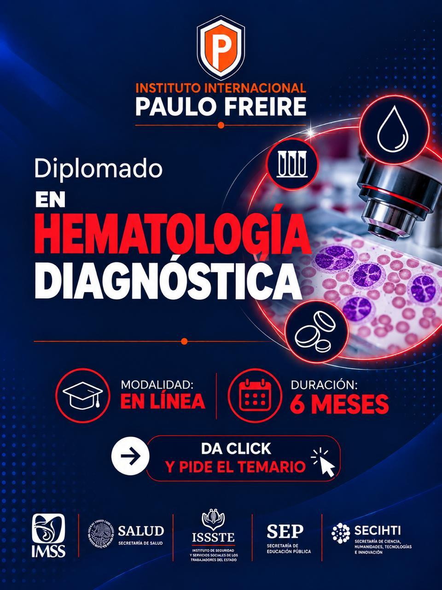
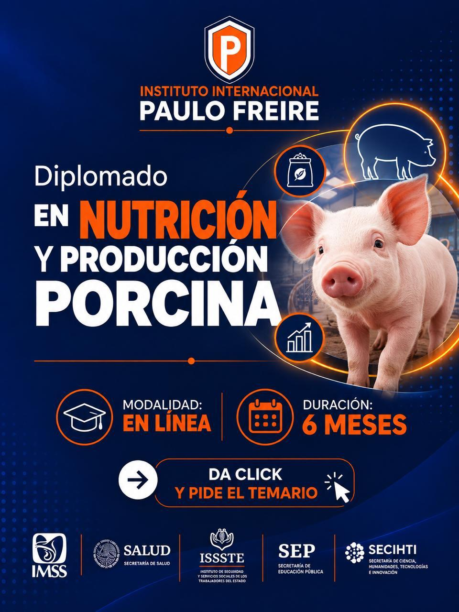
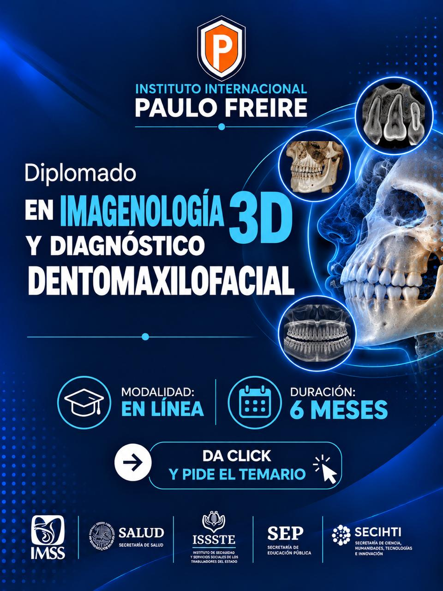

DIPLOMADOS EN LINEA
DIPLOMADOS EN LINEA

Fortalece tus conocimientos en los procesos de calidad, seguridad y confiabilidad que respaldan el trabajo de los laboratorios de banco de sangre.

Desarrolla conocimientos y competencias para la administración, supervisión y optimización de unidades de producción avícola, integrando herramientas de gestión, bioseguridad, bienestar animal y productividad.

Amplía tus conocimientos en el diagnóstico, planificación y abordaje de las maloclusiones y alteraciones del crecimiento craneofacial, integrando fundamentos científicos, biomecánicos y clínicos de la ortodoncia y la ortopedia maxilar.

Fortalece tus conocimientos y perfecciona tus habilidades en procedimientos restauradores, técnicas adhesivas y diseño de sonrisas, integrando estética, funcionalidad y precisión clínica.

Fortalece tus conocimientos en el estudio de la sangre y sus componentes, desarrollando habilidades para comprender e interpretar hallazgos hematológicos que contribuyen al diagnóstico y seguimiento de diversas enfermedades.

Fortalece tus conocimientos en alimentación, manejo nutricional y sistemas de producción porcina, integrando estrategias que favorezcan la eficiencia productiva, la sanidad y la rentabilidad de las explotaciones pecuarias.

Fortalece tus conocimientos en interpretación de imágenes tridimensionales, tomografía computarizada de haz cónico (CBCT) y diagnóstico de estructuras dentales y maxilofaciales.